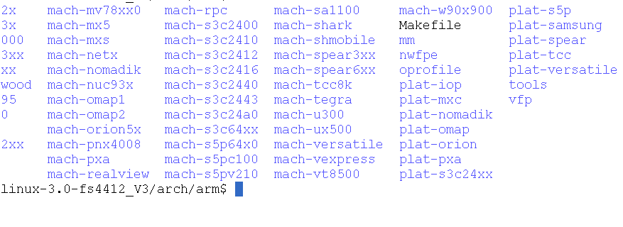

- 1. Linux设备树的起源
- 2. Linux设备树的常见概念
- 3 设备树的语法
- address-cells和#address-siz属性
- address-cells = <1> 表示address字段的长度的为1
- size-cells = <1>; 表示length字段的长度为1
- address-cells = <1>; 基地址、片选号等绝对起始地址所占字长（32位）
- size-cells = <1>; 长度所占字长（32位）
- address-cells 设置为 1，#size-cells 设置为 0。这意味着子节点的 reg 值是一个单一的 uint32，这是一个不包含大小字段的地址，为这两个 cpu 分配的地址是 0 和 1。cpu 节点的 #size-cells 为 0 是因为只为每个 cpu 分配一个单独的地址。
- interrupt-cells - 这是一个中断控制器节点的属性。它声明了该中断控制器的中断指示符中 cell 的个数（类似于 #address-cells 和 #size-cells）
1. Linux设备树的起源
在Linux 2.6中，arch/arm/plat-xxx和arch/arm/mach-xxx中充斥着大量的垃圾代码，相当多数的代码只是在描述板级细节，而这些板级细节对于内核来讲，不过是垃圾，如板上的platform设备、resource、i2c_board_info、spi_board_info以及各种硬件platform_data。常见的s3c2410、s3c6410等板级目录，代码量在数万行。

Linus Torvalds对于此种情况大发雷霆，在2011年的ARM Linux邮件列表宣称this whole ARM thing is a f*cking pain in the ass”
所以Linux开发社区就开始整改，设备树最早用于PowerPC等其他体系架构，ARM架构开发社区就开始采用设备树来描述设备的信息
2. Linux设备树的常见概念
DT : Device Tree FDT : Flattened DeviceTree OF : Open Firmware DTS : Device Tree Source DTSI : Device Tree Source Include DTB : Device Tree Blob DTC : Device Tree Compiler
2.1快速编译设备树---DTC (device tree compiler)
- 将.dts编译为.dtb的工具
- DTC的源代码位于内核的scripts/dtc目录，在Linux内核使能了Device Tree的情况下，编译内核的时候主机工具dtc会被编译出来
- 在Linux内核的arch/arm/boot/dts/Makefile中，描述了当某种SoC被选中后，哪些.dtb文件会被编译出来，如与EXYNOS对应的.dtb包括：
dtb-$(CONFIG_ARCH_EXYNOS) += exynos4210-origen.dtb \
exynos4210-smdkv310.dtb \
exynos4412-origen.dtb \
-
我们可以单独编译Device Tree文件。当我们在Linux内核下运行make dtbs时，若我们之前选择了ARCH_EXYNOS，上述.dtb都会由对应的.dts编译出来
-
DTC除了可以编译.dts文件以外，其实也可以“反汇编”.dtb文件为.dts文件，其指令格式为：
./scripts/dtc/dtc -I dtb -O dts -o xxx.dts arch/arm/boot/dts/xxx.dtb
2.2 Open Firmware Device Tree 开发固件设备树
-
1，Device Tree可以描述的信息包括CPU的数量和类别、内存基地址和大小、总线和桥、外设连接、中断控制器和中断使用情况、GPIO控制器和GPIO使用情况、Clock控制器和Clock使用情况。
-
2，设备树信息被保存在一个ASCII 文本文件中，适合人类的阅读习惯，类似于xml文件， 在ARM Linux中，一个.dts文件对应一个ARM的machine放置在内核的
arch/arm/boot/dts/ -
3，设备树是一种数据结构，用于描述设备信息的语言，具体而言，是用于操作系统中描述硬件，使得不需要对设备的信息进行硬编码(hard code)
-
4, Device Tree由一系列被命名的结点（node）和属性（property）组成，而结点本身可包含子结点。所谓属性，其实就是成对出现的name和value
-
5, 设备树源文件dts被编译成dtb二进制文件，在bootloader运行时传递给操作系统，操作系统对其进行解析展开(Flattened)，从而产生一个硬件设备的拓扑图有了这个拓扑图，在编程的过程中可以直接通过系统提供的接口获取到设备树中的节点和属性信息
3 设备树的语法
- 节点
- 属性
- 根节点
- compatible属性
- reg属性
-
address-cells和#address-siz属性
- 中断信息属性--interrupts和interrupts
3.1 节点node
-
节点名称：每个节点必须有一个“<名称>[@<设备地址>]”形式的名字： <名称> 就是一个不超过31位的简单 ascii 字符串，节点的命名应该根据它所体现的是什么样的设备。比如一个 3com 以太网适配器的节点就应该命名为ethernet，而不应该是 3com509。
-
<设备地址>用来访问该设备的主地址，并且该地址也在节点的 reg 属性中列出，同级节点命名必须是唯一的，但只要地址不同，多个节点也可以使用一样的通用名称，当然设备地址也是可选的，可以有也可以没有
-
树中每个表示一个设备的节点都需要一个 compatible 属性
3.2 属性property
-
简单的键－值对，它的值可以为空或者包含一个任意字节流。虽然数据类型并没有编码进数据结构，但在设备树源文件中任有几个基本的数据表示形式 :
- 文本字符串（无结束符）可以用双引号表示：
string-property = "a string" - Cells是 32 位无符号整数，用尖括号限定：
cell-property = <0xbeef 123 0xabcd1234> - 二进制数据用方括号限定：
binary-property = [01 23 45 67]; - 不同表示形式的数据可以使用逗号连在一起：
mixed-property = "a string", [01 23 45 67], <0x12345678>; - 逗号也可用于创建字符串列表：
string-list = "red fish", "blue fish";
- 文本字符串（无结束符）可以用双引号表示：
3.2.1 常见属性--compatible属性
-
指定了系统的名称，是一个字符串的列表，实际在代码中可以用于进行匹配，当前你选择的是哪个机器，它包含了一个“<制造商>,<型号>”形式的字符串。重要的是要指定一个确切的设备，并且包括制造商的名子，以避免命名空间冲突，
-
不要使用带通配符的 compatible 值，比如“fsl,mpc83xx-uart”或类似情况
/ {
compatible = "acme,coyotes-revenge";
};
3.2.2 常见属性--#address-cells和#size-cells
-
address-cells = <1> 表示address字段的长度的为1
-
size-cells = <1>; 表示length字段的长度为1
external-bus {
#address-cells = <2>
#size-cells = <1>;
ethernet@0,0 {
compatible = "smc,smc91c111";
reg = <0 0 0x1000>; // 地址占两个cells， 长度占1个cells
nterrupts = < 5 2 >;
};
}
address-cells = <1>; 基地址、片选号等绝对起始地址所占字长（32位）
size-cells = <1>; 长度所占字长（32位）
例子：
cpus {
#address-cells = <1>;
#size-cells = <0>;
cpu@0 {
compatible = "arm,cortex-a9";
reg = <0>;
};
cpu@1 {
compatible = "arm,cortex-a9";
reg = <1>;
};
};
address-cells 设置为 1，#size-cells 设置为 0。这意味着子节点的 reg 值是一个单一的 uint32，这是一个不包含大小字段的地址，为这两个 cpu 分配的地址是 0 和 1。cpu 节点的 #size-cells 为 0 是因为只为每个 cpu 分配一个单独的地址。
3.2.3 常见属性--reg属性
reg的组织形式为reg =
compatible = "acme,coyotes-revenge";
#address-cells = <1>;
#size-cells = <1>;
serial@101f2000 {
compatible = "arm,pl011";
reg = <0x101f2000 0x1000 >;
interrupts = < 2 0 >;
};
｝
3.2.4 常见属性--中断信息
-
描述中断连接需要四个属性：
-
interrupt-controller - 一个空的属性定义该节点作为一个接收中断信号的设备
-
interrupt-cells - 这是一个中断控制器节点的属性。它声明了该中断控制器的中断指示符中 cell 的个数（类似于 #address-cells 和 #size-cells）
-
interrupt-parent - 这是一个设备节点的属性，包含一个指向该设备连接的中断控制器的 phandle(指向或者可以引用&)那些没有 interrupt-parent 的节点则从它们的父节点中继承该属性。
- interrupts - 一个设备节点属性，包含一个中断指示符的列表，对应于该设备上的每个中断输出信号
-
-
代码举例：
/ {
compatible = "acme,coyotes-revenge";
#address-cells = <1>;
#size-cells = <1>;
interrupt-parent = <&intc>;
serial@101f0000 {
compatible = "arm,pl011";
reg = <0x101f0000 0x1000 >;
interrupts = < 1 0 >;
};
intc: interrupt-controller@10140000 {
compatible = "arm,pl190";
reg = <0x10140000 0x1000 >;
interrupt-controller;
#interrupt-cells = <2>;
};
｝
对于arm架构，标志为具体含义
Documentation/devicetree/bindings/arm/gic.txt
The 1st cell is the interrupt type;
0 for SPI interrupts,
1 for PPI
02 interrupts.
The 2nd cell contains the interrupt number for the interrupt type.
SPI interrupts are in the range [0-987].
PPI interrupts are in the 06 range [0-15].
The 3rd cell is the flags, encoded as follows:
bits[3:0] trigger type and level flags.
10 1 = low-to-high edge triggered
11 2 = high-to-low edge triggered
12 4 = active high level-sensitive
13 8 = active low level-sensitive
4 练习时间
写一个设备节点：已知#address-cells = <1> #size-cells = <1>;
1、节点名字test_nod
2、有以下属性： 2.1、compatible 属性取 test,farsight
2.2、reg 属性取地址 0x11000C40 0x11000CE0 length 均为0x24
2.3、有一个空属性：testprop,mytest;
2.4、有一个字符串属性test_list_string ;有以下值：
"red fish","fly fish", "blue fish";
2.5、描述一个中断节点：中断IO挂载在gpx1_2上，中断方法为高 电平方式触发
3、将上述节点挂载至根目录下
参考答案
test_nod@0x11000C40 {
compatible = "farsight,test";
reg = <0x11000C40 0x24
0x11000CE0 0x24>;
testprop,mytest;
test_list_string = "red fish","fly fish", "blue fish";
interrupt-parent = <&gpx1>;
interrupts = <2 4>;
5 常用OF API
5.1 查找节点
static inline const char *of_node_full_name(const struct device_node *np)
{
return np ? np->full_name : "<no-node>";
}
extern struct device_node *of_find_node_by_name(struct device_node *from,const char *name);
extern struct device_node *of_find_node_by_type(struct device_node *from,const char *type);
extern struct device_node *of_find_compatible_node(struct device_node *from,const char *type, const char *compat);
extern struct device_node *of_find_matching_node_and_match(
struct device_node *from,const struct of_device_id *matches,
const struct of_device_id **match);
extern struct device_node *of_find_node_by_path(const char *path);
extern struct device_node *of_find_node_by_phandle(phandle handle);
常用的是：
struct device_node *of_find_node_by_path(const char *path);
struct device_node *of_get_child_by_name(const struct device_node *node,const char *name);
数据结构：
struct device_node {
const char *name;
const char *type;
phandle phandle;
const char *full_name;
struct property *properties;
struct property *deadprops; /* removed properties */
struct device_node *parent;
struct device_node *child;
struct device_node *sibling;
struct device_node *next; /* next device of same type */
struct device_node *allnext; /* next in list of all nodes */
struct proc_dir_entry *pde; /* this node's proc directory */
struct kref kref;
unsigned long _flags;
void *data;
#if defined(CONFIG_SPARC)
const char *path_component_name;
unsigned int unique_id;
struct of_irq_controller *irq_trans;
#endif
};
从指定的节点中查找属性：
struct property of_find_property(const struct device_node np,const char name,int lenp)
数据结构：
struct property {
char *name;
int length;
void *value;
struct property *next;
unsigned long _flags;
unsigned int unique_id;
};
从指定的节点中查找compatible属性：
int of_device_is_compatible(const struct device_node *device,
const char *compat)
6 通过OF API查找相应的节点、属性
以 4 练习的代码为例：
6.1 查找到相关的设备树节点
np = of_find_node_by_path("/test_nod@12345678");
if(!np)
{
printk("find node fail!\n");
ret = -1;
}
else{
printk("find node success!\n");
printk("node's name : %s\n", np->name);
printk("node's full_name : %s\n", np->full_name);
}
6.2 从查找到的节点里面分析该节点的属性
6.2.1 查找compatible属性
property = of_find_property( np, "compatible",NULL);
if(!property)
{
printk("find property fail!\n");
ret = -1;
}
else{
printk("find property success!\n");
printk("property's name : %s\n", property->name);
printk("property's value : %s\n", (const char *)property->value);
}
6.2.2 查找compatible属性的另一种方法
int ret_compatible = of_device_is_compatible(np,"farsight,test");
if(!ret_compatible)
{
printk("match compatible fail!\n");
ret = -1;
}
else
{
printk("match compatible success!\n");
}
6.2 从查找到的节点里面分析该节点的数组属性
extern int of_property_read_u32_index(const struct device_node *np,
const char *propname,
u32 index, u32 *out_value);
extern int of_property_read_u8_array(const struct device_node *np,
const char *propname, u8 *out_values, size_t sz);
extern int of_property_read_u16_array(const struct device_node *np,
const char *propname, u16 *out_values, size_t sz);
extern int of_property_read_u32_array(const struct device_node *np,
const char *propname,
u32 *out_values,
size_t sz);
6.2 从查找到的节点里面分析该节点的字符串数组属性
of_property_read_string_index
6.3 从查找到的节点里面分析该节点的中断属性
可参考驱动第二天里的中断
7 platform驱动的变更
参考链接：
https://blog.csdn.net/cosmoslhf/article/details/49364577 https://www.cnblogs.com/chineseboy/p/5235608.html https://blog.csdn.net/21cnbao/article/details/8457546 https://blog.csdn.net/qq_20678703/article/details/49100111